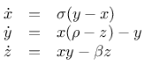

Rendern von TeX-Formeln
Mein selbst geschriebenes CMS bietet schon länger die Möglichkeit, TeX-Formeln zu Illustrationszwecken zu rendern und in Artikel einzubinden. Nachdem ich in einem meiner Projekte die Möglichkeit in GitLab eingebaut habe, habe ich nun beschlossen, die zugrundeliegende Technik etwas zu verfeinern.
In diesem Vorhaben wurde ich noch bestärkt, nachdem ich herausfand, dass dieses Feature natürlich auch in Jupyter-Notebooks zur Verfügung steht - wenn man weiß, wie man es aktiviert...
Bisher war es lediglich möglich, TeX-Formeln zu setzen und ein Bild daraus zu rendern, das dann - zum Beispiel - in Webseiten integriert werden konnte. Neulich fragte ich mich aber, wie man eines der vielen TeX-Features für Formelsatz integrieren könnte: Formelnummern. Nachdem ich einige Hintergründe recherchiert hatte, verbesserte ich die bisher dafür von mir angewendete Technik - ich erweiterte das Template formula.tex folgendermaßen:
\ifdefined\formula
\else
\def\formula{E = m c^2}
\fi
\documentclass[border=2pt]{standalone}
\usepackage{amsmath}
\usepackage{varwidth}
\begin{document}
\begin{varwidth}{\linewidth}
\ifdefined\formulaCounter
\setcounter{equation}{\formulaCounter}
\begin{align} \formula \end{align}
\else
\[ \formula \]
\fi
\end{varwidth}
\end{document}
Ruft man pdflatex unter Verwendung dieses Templates wie folgt auf:
pdflatex \\def\\formula{a=b}\\input{/location/of/formula.tex}
erhält man das bisherige Ergebnis - die in Display Mode erstellte TeX-Formel:

Mit dem alternativen, um formulaCounter ergänzten Aufruf:
pdflatex \\def\\formulaCounter{12}\\def\\formula{a=b}\\input{/location/of/formula.tex}
ändert sich das Ergebnis: Die Formel wird im Display Mode gesetzt, erhält aber zusätzlich die Nummer 13.
Diese Erweiterung wurde auch in das entsprechende GitLab-Projekt eingebaut und in einer neuen Release zur Verfügung gestellt.
Artikel, die hierher verlinken
Konverter : WARC -> GraphViz
23.10.2021
Ich wurde durch eine Frage in meiner Mastodon-Blase auf ein mir bis dato unbekanntes Dateiformat aufmerksam gemacht und dadurch neugierig...


Vor 5 Jahren hier im Blog
-
CircuitBreakers in Modulen
19.11.2016
Eine Möglichkeit, die Infrastruktur zum Fehlermanagement zu ergänzen.
Weiterlesen...
Tags
Android Basteln C und C++ Chaos Datenbanken Docker dWb+ ESP Wifi Garten Geo Git(lab|hub) Go GUI Hardware Java Jupyter Komponenten Links Linux Markup Music Numerik PKI-X.509-CA Python QBrowser Rants Raspi Revisited Security Software-Test sQLshell TeleGrafana Verschiedenes Video Videos Virtualisierung Windows Upcoming...
Neueste Artikel
-
Fork der BeanShell wegen Trojan Source
Es gibt inzwischen einen von mir erstellten Fork des originalen Repository, in dem ich die Komponente zur Darstellung der Konsole gegen die ausgetauscht habe, die in der sQLshell in den Plugins MDIJavaEditor und MDISqlEditor zum Einsatz kommt - dadurch wird wenigstens durch das Syntax-Highlighting auf problematische Stellen im Code hingewiesen.
Weiterlesen... -
Trojan Source, dWb+ und sQLshell
Nachdem die kritische Lücke Trojan Source veröffentlicht wurde habe auch ich geprüft, ob die sQLshell oder dWb+ dadurch verwundbar wären.
Weiterlesen... -
Trojan Source mit SQL und Postgres
Nachdem ich das hochinteressante Paper Trojan Source: Invisible Vulnerabilities gelesen hatte kam ich durch einen Post auf Mastodon (leider nicht öffentlich einsehbar) auf Ideen... auf Ideen...
Weiterlesen...
Manche nennen es Blog, manche Web-Seite - ich schreibe hier hin und wieder über meine Erlebnisse, Rückschläge und Erleuchtungen bei meinen Hobbies.
Wer daran teilhaben und eventuell sogar davon profitieren möchte, muß damit leben, daß ich hin und wieder kleine Ausflüge in Bereiche mache, die nichts mit IT, Administration oder Softwareentwicklung zu tun haben.
Ich wünsche allen Lesern viel Spaß und hin und wieder einen kleinen AHA!-Effekt...
PS: Meine öffentlichen GitHub-Repositories findet man hier.